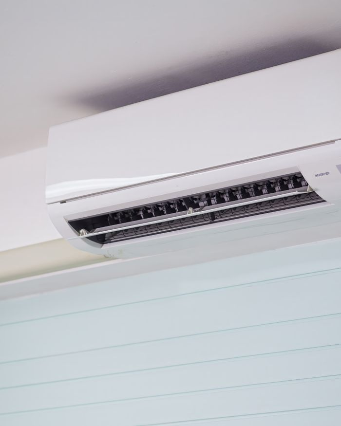
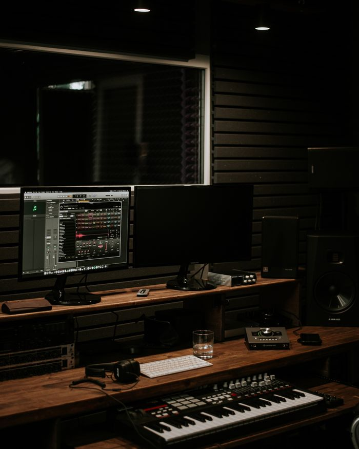
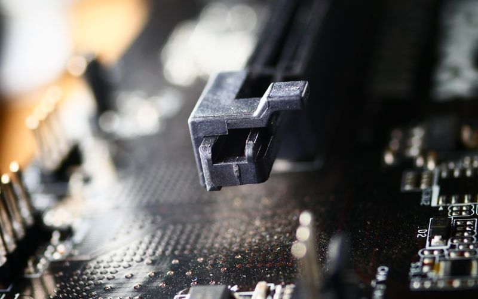

IN PROGRESS
Personal Portfolio
This website brings my engineering studies, professional experience, and creative work into one place.
AARON MIKHAEL G. CANONIZADO
Different disciplines. A practical approach.
I study engineering, manage service operations, and make music.
01 / THE APPROACH
I'm Aaron, a fourth-year Computer Engineering student at ICCT Colleges and Operations Manager at AMGC Air Conditioning Services.
My background spans service operations, customer support, virtual assistance, and music production. Each brings a different perspective to how I organize work, communicate with people, and approach practical problems.
Alongside engineering and operations, I've worked in music since 2016—as a musician, music producer, and sound engineer, playing drums, bass, and guitar.
02 / CAREER GALLERY
Select a discipline to explore my experience.
Building my technical foundation through engineering studies, with an interest in computer hardware, digital electronics, and practical software projects.
Current learning · Engineering fundamentals and problem solving

Working as Operations Manager in an air conditioning services business. This role connects my engineering interests with the practical demands of running service operations.
Experience · Service operations and coordination
Former Customer Service Representative, bringing customer-facing experience and a service perspective to my work.
Experience · Customer communication and support
Experience working as a virtual assistant, adding remote work and professional communication to my multidisciplinary background.
Experience · Remote assistance

Musician, music producer, and sound engineer. I play drums, bass, and guitar—connecting performance with the technical side of sound.
Experience · Performance, music production, and sound engineering


03 / SELECTED WORK
A transparent look at what I'm building and what comes next.
IN PROGRESS
This website brings my engineering studies, professional experience, and creative work into one place.

PLANNED
A planned space for electronics experiments, hardware prototypes, and microcontroller projects.
DOCUMENTATION TO COME
A space to document learning in logic gates, circuit design, and digital electronics.
04 / AREAS OF PRACTICE
LEARNING
Computer hardware · Digital electronics · HTML & CSS · JavaScript fundamentals · Git & GitHub
EXPERIENCE
Operations management · Customer service · Virtual assistance
EXPERIENCE
Music production · Sound engineering · Drums · Bass · Guitar
05 / START A CONVERSATION